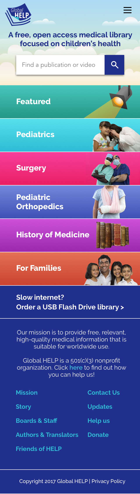

Global HELP needed a new website design that aligned with the organization’s mission, clearly communicated the purpose of the site to users, improved navigation of a multi-language library of free downloadable PDFs, and was easy to use on a variety of devices.
Background
Founded in 2002, Global HELP (Health Education Low-cost Publications) is a small, Seattle-based nonprofit with the mission of providing a free medical library focused on children's health. They offer educational materials for medical professionals, as well as resources for people with no medical training. Their website is their primary method of distributing materials, with roughly 10,000 PDFs downloaded from the site each day. The organization has gone through a few website design changes in the past few years, but recently focused on designing for a growing user base and an expanding collection of PDFs and videos.
The Problems
Global HELP's menu system started when the organization had a relatively small collection of PDFs and grew in an ad hoc way as the library expanded, creating an overall system that lacked cohesiveness and felt disjointed. The organization also noted a high bounce rate on key pages - users who landed on the site quickly left without further exploration. This suggested that the site's purpose wasn't clearly articulated and/or that users were unable to find what they were looking for in a timely manner.
Team
Brita Ness, UX/UI Designer
Danny Vink, Developer
Dean Carlson, Project Manager
Timeline
9 Months / Part time
Skills
User research Personas Wireframing User testing High-fidelity mockups High-fidelity prototypes
Tools
Paper and pencil Sketch Illustrator inVision
Reviewing Core Assumptions
As part of the process, our team reviewed some core assumptions that we were making. Here are some of the questions we sought to answer:
Who are our users?
How are users interacting with the site?
How are they getting to the site?
What do they expect to find on the site?
Analyzing Data
To shed some light on our assumptions, we examined data provided by Google Analytics. Here is what we found:
The majority of Global HELP users reside in Southeast Asia, primarily in India.
Roughly 49% of users access materials on mobile, and 49% on desktop or laptop computers. Fewer than 2% use tablets. This finding highlighted the importance of taking a mobile-first approach and designing for optimal use on a variety of devices.
Most users find Global HELP materials directly from search engines, and many of those searches return product pages. Only 7% of users begin navigating the site from the homepage.
Many users access Global HELP materials from areas with limited internet access. In some areas, it takes hours to download one PDF.
Identifying our User Base
Because the people who commonly access materials on global-help.org are spread widely across countries, continents, and cultures, we needed to design for widely-held mental models of how medical information should be organized, classified, and presented. The map below highlights the top ten countries that access Global HELP's materials.
User Research
To develop personas and better understand how people use Global HELP, we examined user testimonials, commonly searched words and phrases in the internal site search, survey results, and frequently-clicked menu items. While it would have been valuable to collect data from in-person interviews with users in Southeast Asia, time, budget, language, and geographic constraints made it not feasible.
Personas
To ensure that our design efforts remained rooted in actual user needs, we created 4 basic personas to represent the needs of our major user groups.
Creating an Information Architecture
After identifying our core user groups, we began thinking about how our menu structure could be optimized to help them find what they need faster and more efficiently. We explored several options, but organizing primarily by medical training level and specialty stood out as the most user-centric way to structure Global HELP's library because possession of medical knowledge can make or break whether a particular resource is relevant or useful to someone.
We also took stock of the current library and developed organizing principles for sub-menu systems within the major categories. The library contains a large amount of information on pediatric orthopedics, and Global HELP had previously built an entirely separate website, Pediatric Orthopedic Academy (POA), to organize pediatric orthopedics-focused PDFs and videos hosted on global-help.org. POA's menu structure had received overwhelmingly positive feedback from users over the years, so we used it as a jumping-off point for organizing Global HELP's section on pediatric orthopedics. Because the other five menu items contained fewer than 30 publications each, we listed them under sub-headings on a single page, rather than breaking them into sub-menu pages because it more closely resembled the organizing principles on POA to which people responded well.
Scoping Challenges
One of the most challening aspects of this project was that, concurrent with the redesign, the Founder and Board of Directors were exploring different ideas for the mission and vision of Global HELP. Discussions about whether the organization should narrow its focus to pediatric orthopedics, keep a broader focus on children's medicine, or attempt to provide information in many different specialties were common during the redesign. Leadership in the organization also underwent a major change with the addition of two new medical directors. The ever-evolving nature of the organization itself required that our website design work well with the current library of materials and accomodate a variety of potential future expansion models.
Sketching and Wireframing
After creating a general information architecture, I created sketches, which I then converted into wireframes to help the team begin to visualize how it might be translated into design. During this process, I balanced the needs of the Executive Director to include more images of people - especially children - as part of the organization's fundraising strategy and the needs of users - particularly medical professionals - who need quick access to credible resources. I also considered how the website would eventually be coded as a responsive design.
Prototyping and Usability Testing
After wireframing and sketching the key user flows, I created some mid-fidelity comps and used inVision to make a clickable prototype for usability testing. Here are the questions I sought to answer through observing how users interact with my prototype:
Does our new website design promote a fast and accurate understanding of Global HELP and its services?
Does our new navigation make sense to users, particularly medical professionals?
When do users use the search bar, and when do they use the menu system to find the information that they need?
Does arranging the menu by specialty first provide an intuitive entry point for users to access our materials?
During usability testing, I met with 5 medical professionals at Seattle Children's Hospital. Testing exposed ample opportunities for iteration and improvement; however, the overall response I received from participants suggested that our broader design decisions were on the right track: that simplifying the menu on the home page and organizing first by specialty/user group improved navigation, and that displaying a shortened mission statement at the top of the page allowed participants to quickly understand the purpose of the site.
After iterating on the layout and navigation of the website, I turned my focus to visual design. My task was to create a design that effectively balanced user goals and fundraising strategies. Stakeholders wanted the site to feel like a credible source for medical information, but also communicate its focus on children's health. We were also working with the constraint of minimizing the number of large images on the site because most Global HELP users reside in areas with slower internet connection speeds and large images can greatly increase loading time.

Results
After the resdesign, Global HELP's bounce rate dropped from 54% to 20%. Internal site search data also suggested that users had a clearer idea of what they could find on global-help.org.
After the resdesign, Global HELP's bounce rate dropped from 54% to 20%
Areas for further exploration
If I were to take this project further, I would devote time to researching the core value proposition of providing a library of PDFs. Because roughly half of Global HELP's users access materials on smartphones, I would hypothesize that the PDF format makes reading challenging for these users. To solve for this, I would start by exploring the option of working with a developer to create a program that "crawls" PDFs, extracts their content, and displays it as a simple, responsive web page.
I would also like to explore how to better cater to users who do not speak English. I would begin by interviewing bilingual English speakers who are familiar with medical terminology to identify weak points in the overall experience of using the site.
More Projects
BestBouquet Product Concept A concept that I developed for a tool that provides bouquet suggestions for a variety of occasions.